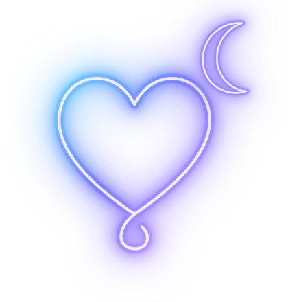

●●●
Carta intensa
Ve la sentite di scoprirla?

Un gioco per ritrovarsi
✦ Work in progress
Sto preparando le carte…
Durante il gioco la carta si illumina del colore di chi deve rispondere: così sapete sempre a chi passare il telefono.
Tu
Scegli un colore
L'altra persona
Scegli un colore
●●●
Carta intensa
Ve la sentite di scoprirla?
Va bene fermarsi. Quando una conversazione si scalda, il corpo ha bisogno di tempo per calmarsi: di solito almeno venti minuti.
Prima di allontanarvi, ditevi quando riprendete. Nel frattempo fate qualcosa che vi calma, senza ripensare alla discussione.
Quando tornate, ripartite dalla stessa carta.
Zona delicata
Cancella colori, carte giocate, in sospeso e preferite. Non si può annullare.
Le domande che avete messo da parte. Riapritele quando ve la sentite.